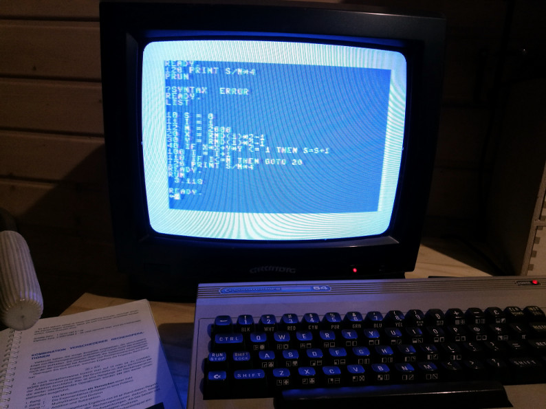
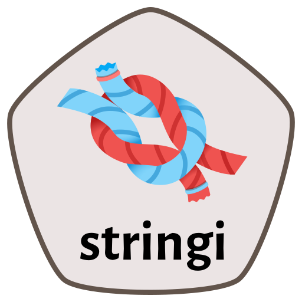
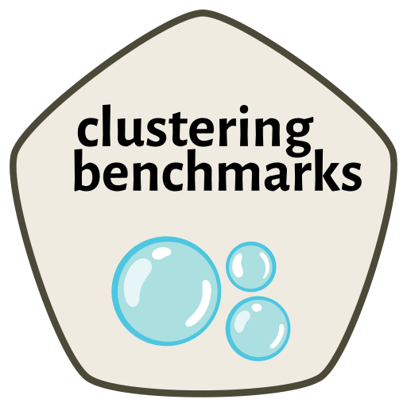
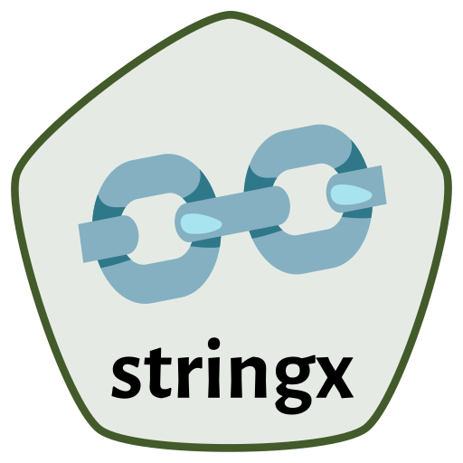

Software¶
I’ve been programming since the age of 7; my first computer was the C64.
I believe most software should be free.
Shortcuts:
○ genieclust (Python/R)
○ stringi (R/[1])
○ clustering-benchmarks (Python/language agnostic)
○ stringx (R)
○ realtest (R)
My developer (“social media”) profiles: ○ GitHub ○ StackOverflow
Check out my open-access textbooks: ○ Deep R Programming ○ Minimalist Data Wrangling with Python
genieclust (Python+R)¶
Fast and robust hierarchical clustering with noise point detection: Genie finds meaningful clusters and is fast even on large data sets.
Paper on the
genieclustpackage in SoftwareX (doi:10.1016/j.softx.2021.100722)Paper on the Genie algorithm in Information Sciences (doi:10.1016/j.ins.2016.05.003)
stringi (R)¶

stringi (pronounced “stringy”, IPA [strinɡi]) is THE R[1] package for very fast, portable, correct, consistent, and convenient string/text processing in any locale or character encoding. It is one of the most often downloaded packages on CRAN.
Paper on
stringiin the Journal of Statistical Software (DOI:10.18637/jss.v103.i02)
clustering-benchmarks (Python etc.)¶

A framework for benchmarking clustering algorithms
Paper in SoftwareX (DOI:10.1016/j.softx.2022.101270)
stringx (R)¶

Drop-in replacements for base string functions powered by
stringi
realtest (R)¶
Where expectations meet reality: Realistic unit testing in R
Other¶
TurtleGraphics (R) (maintained by Barbara Żogała-Siudem)
Learn R programming while having a jolly time
agop (R)
Aggregation operators and preordered sets in R
genie (R)
A new, fast, and outlier resistant hierarchical clustering algorithm (superseded by
genieclust)SimilaR (R) (maintained by Maciej Bartoszuk)
R source code similarity evaluation
○ CRAN ○ GitHub ○ Paper on the SimilaR package in the R Journal (DOI:10.32614/RJ-2020-017)
FuzzyNumbers (R)
Tools to deal with fuzzy numbers in R
CITAN (R)
CITation ANalysis toolpack [deprecated]